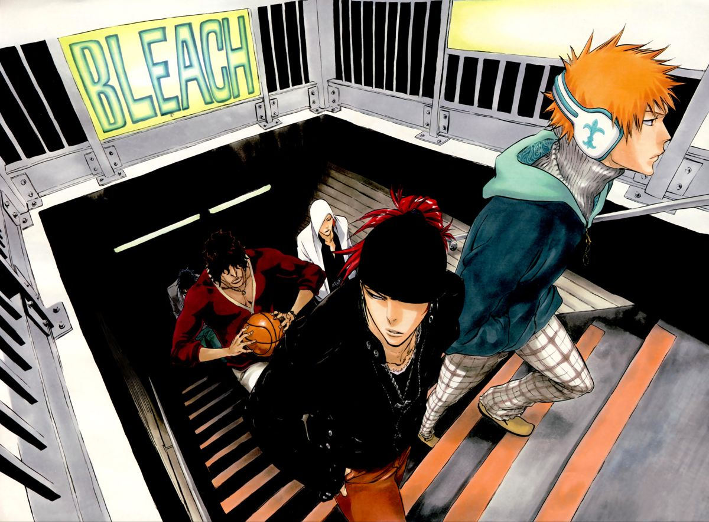

Nuestra historia
Tokyo Noodles nacio de un mismo antojo compartido por tres amigos: comer un ramen como el que probamos en un pequeño local de Tokio, cerca de la estacion de Shinjuku. Volvimos a Chile con esa receta en la cabeza y la fuimos ajustando, taza tras taza, hasta encontrar el caldo que queriamos servir.
Hoy seguimos cocinando de la misma forma: caldo a fuego lento durante horas, masa de gyoza amasada cada mañana y un local pensado para sentarse con calma o pedir para llevar.

Como trabajamos
Ingredientes frescos
Compramos verduras y carnes cada semana en el mercado, sin dejar nada para despues.
Recetas tradicionales
El caldo se cocina por mas de ocho horas, tal como lo aprendimos en Tokio.
Hecho al momento
Cada gyoza se pliega a mano y cada bowl se arma cuando llega tu pedido, no antes.